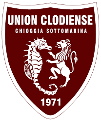

Union Clodiense

L'Union Clodiense Chioggia Football Club S.r.l., conosciuta anche come Union Chioggia Sottomarina o Union C.S., finanche Clodiense o Chioggia, è una società calcistica italiana con sede nella città di Chioggia, nella città metropolitana di Venezia. Milita in Serie C, terza divisione del campionato italiano di calcio. Nella stagione 2025-2026 militerà in Serie D.
Costituita nel 2011 come A.S.D. Clodiense, porta avanti de facto la tradizione sportiva iniziata nel 1971 con la fondazione del F.B.C. Union ClodiaSottomarina, che nei primissimi anni d'attività giocò alcune stagioni in Serie C, per poi trascorrere il resto della propria esistenza (terminata dopo esattamente quarant'anni) nel dilettantismo. Nel 2019, la fusione con il Sottomarina Lido ha dato continuità alla storia sociale, ricompattando la tifoseria attorno al club.